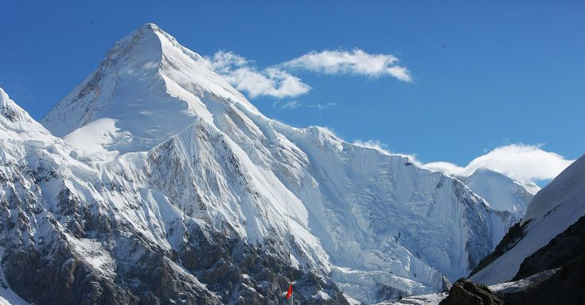

Туризм в Казахстане
Казахстан – девятая по величине страна в мире, земля древней цивилизации. Находясь в центре Евразийского материка, он представляет особый природный комплекс, вобравший в себя ярчайшие образцы ландшафта обоих частей континента.
Заилийский Алатау
Хребет Заилийский Алатау является одной из крайних северных дуг горной системы Тянь-Шаня. Он расположен на 43° с. ш., в пределах 75-78° в. д., частично в Казахстане, Киргизии, Китае. Хребет начинается на западе в пределах р. Чу и простирается на 280 км на восток до р. Чилик. К северу от осевого гребня хребта склоны полого спускаются к впадине реки Или и равнинам Казахстана, на юге хребет отделён от Кунгей Алатау продольными межгорными долинами двух рек — Чилик и Чонкемин. В области их истоков хребты соединяются через Чилико-Кеминский горный узел. Преобладающие высоты — 4000—4600 м, высшая точка — пик Талгар (4973—4979 м). На северном склоне расположен Ледник Городецкого. Наиболее высокая часть Заилийского Алатау в окрестности пика Талгар между истоками реки Талгар, верховьем реки Чилик и Чилико-Кеминским горным узлом называется Талгарским массивом

Пик Хан-Тенгри
Самый красивый и горный пик не только Казахстана, но и всего мира. Известность этому месту принесла необыкновенная форма его вершины – практически идеальная остроконечная пирамида, которая во время восхода и заката солнца окрашивается вместе со всей горой в алый цвет. С древних времен люди населяли это интересное и красивое место духами и окружали его легендами.
Хан-Тенгри - пирамидальный пик на Тянь-Шане на хребте Тенгри-Таг на границе Киргизии, Казахстана, и Синьцзян-Уйгурского автономного района Китая. Высота — 7010 метров (с ледником), без учёта ледяной толщи — 6995 м. Его название в переводе с тюркского означает «Повелитель неба».
Чарынский каньон
Чарынский каньон – одно из древнейших и красивейших мест в Казахстане. Породам, из которых сложен каньон, более чем 12 миллионов лет! А причудливые формы, которые принимает ярко-красный песчаник под воздействием ветра и воды, поражают своей сказочной красотой и великолепием. Там же растет одно из редчайших пород деревьев – реликтовый согдийский ясень. 25 миллионов лет назад это дерево было распространено на планете. Сейчас ясеневые рощи можно встретить только в Чарынском каньоне и в Северной Америке.